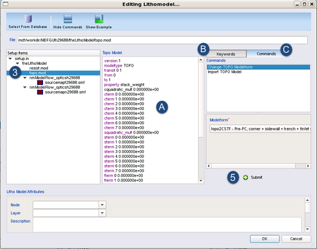

Topo modelforms in Calibre nmModelflow
use templates, which come with preset signals and parameters that
you can edit in the interface.
Use this task when you need a customized
topo model, such as one having additional signals or non-sequential
signals.
Procedure
- In the
Calibre nmModelflow Database Browser, select a Litho Model from
the list with a litho model.
- Click Lithomodel
Editor.
- Click on
the topo model name (the default filename is topo.mod if
you used the Lithomodel Creation tool) to open the topo model in
the editor.
Figure 1. Lithomodel
Editor
- Modify
your topo model specification using any of the following methods:
Modify
the model text directly in the center pane (A in the figure).
Use the Keywords tab
(B in the figure), which contains a list of individual topo model
parameters. Clicking on a parameter adds them to the displayed topo
model.
Use the Commands tab
(C in the figure), which contains macros that let you change the
current topo modelform or import a new topo model file. Both of
these actions replace the existing topo model.
Use the Command
Window, found at the bottom left corner of the Calibre nmModelflow
window. For example, you can change the total number of signals using
one or more mdf param topo_signaltermnum number commands.
For example, the following commands modify the base CST model to
be CS with only C-terms 0 and 1:
mdf param topo_ctermnum 2
mdf param topo_ttermnum 0
Each mdf
param command should be on its own line.
The most common
custom command is to change the default number of terms for a signal.
The default is 8, which generates terms 0 to 7. Specifying 0 removes the
signal from the model.
Note: You can also change the number of terms per signal in the
Flow Stage Wizard.
- Click Submit when
you are finished making changes, then click OK to
close the window.
Results
The edited model is saved to the database. You can confirm your
changes by selecting the edited model and then clicking View again.
Tip You can also use the Command Window to inspect
the active litho model.
- mdf gui params topo modelinfo nominal —
Shows information about the active topo model.
- mdf gui params topo nominal — Shows information about
the stage parameters associated with the active topo model.